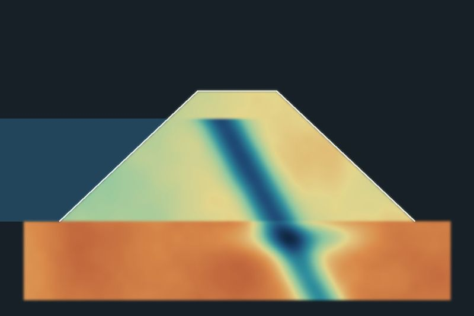

Investigação de maciços e fundações
Seções geofísicas ao longo da barragem para localizar zonas de percolação, umidade anômala e materiais diferentes do projeto.
Monitoramento de barragens e segurança geológica
Investigação e acompanhamento de barragens, taludes e encostas para enxergar infiltração, umidade e instabilidade antes que virem risco.
Falar com a equipe
Seções geofísicas ao longo da barragem para localizar zonas de percolação, umidade anômala e materiais diferentes do projeto.
As mesmas linhas medidas de tempos em tempos: comparar uma campanha com a anterior mostra o que está mudando dentro do maciço.
Mapeamento de áreas instáveis, da espessura do solo e da água no terreno em cortes, encostas e pilhas.
Dados e relatórios técnicos para subsidiar inspeções, revisões periódicas e planos de segurança das barragens.


Por fora, o talude parece igual nas duas visitas. Na seção de resistividade, a água que atravessa o maciço aparece como uma faixa condutora, em azul, e a comparação entre campanhas mostra que ela cresceu.


Conte qual estrutura precisa ser acompanhada e onde. Respondemos com um plano de investigação e monitoramento.
lab@axysgeosolucoes.comBelém, Pará, Brasil